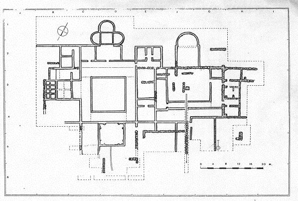

|
RIOSECO Villa romana “los Quintanares” En Rioseco de Soria, se encuentra el yacimiento de “Los Quintanares”. Destacan sus mosaicos, como el de la ‘Madre Naturaleza’. También destacan la cantidad de monedas y útiles encontrados en la villa, uno de los hallazgos más importantes es una escultura, realizada en mármol blanco que representa al Dios Saturno. En octubre de 2010, Patrimonio autoriza las obras de restauración en la villa romana. 
|
| CIUDADES HISPANIA |
MENÚ
|
TOPÓNIMOS |